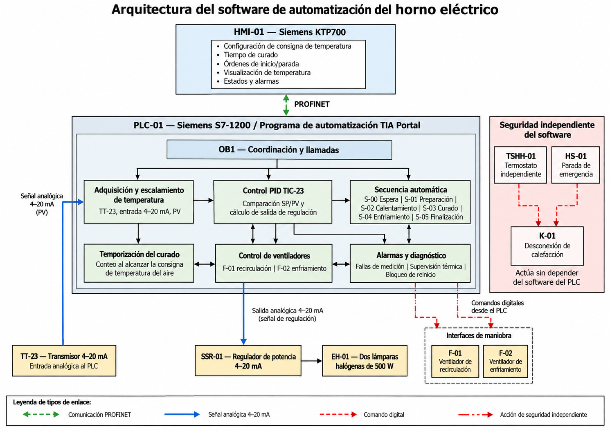

La cámara metálica está construida y se obtuvo funcionamiento de las lámparas halógenas mediante el SSR con accionamiento manual en lazo abierto. El control automático PID, la HMI y el cableado de botoneras y pilotos permanecen pendientes. Esta página distingue los resultados observados de la ingeniería proyectada.
¿Qué necesidad atiende el proyecto?
El curado del barniz aislante de bobinados de motores eléctricos requiere un calentamiento controlado y repetible. El proyecto plantea un prototipo de horno eléctrico capaz de regular la temperatura de la cámara y administrar las etapas del proceso mediante automatización industrial.
Alcanzar una temperatura de consigna referencial de 140 °C, mantenerla con un controlador PID y gestionar el tiempo de curado y el enfriamiento, con supervisión desde una HMI Siemens KTP700. La temperatura medida prevista corresponde al aire de la cámara, no directamente al bobinado.
Arquitectura y funcionamiento esperado
La solución integra una cámara térmica, dos lámparas halógenas de 500 W (EH-01), ventiladores de recirculación y enfriamiento, un sensor PT100 (TE-23), transmisor de 4–20 mA (TT-23), PLC Siemens S7-1200, SSR analógico y pantalla HMI KTP700.
Secuencia de diseño: preparación → calentamiento → curado temporizado al alcanzar consigna → enfriamiento → finalización. El PLC comparará la temperatura medida con la consigna y calculará una salida PID; las protecciones HS-01 y TSHH-01 deberán cortar la calefacción de manera independiente mediante K-01.
Estado actual: el equipo aún no trabaja en lazo cerrado; la activación demostrada es manual y en lazo abierto.
Diseño mecánico, instrumentación y automatización
Se dispone del diseño de la cámara y del tablero, diagramas del proceso y arquitectura de control, selección preliminar de componentes y programa Ladder de referencia. La cámara se proyectó con una capacidad geométrica de 37,5 L y calefacción nominal de 1 kW. La instrumentación definitiva prevé PT100 y transmisor TT-23 para llevar al PLC una señal analógica de 4–20 mA.

La KTP700 se comunicará por PROFINET con el PLC. El bloque principal OB1 coordinará adquisición de temperatura, control PID, temporización, secuencias, ventiladores y alarmas.
PT100 TE-23 → transmisor TT-23 → entrada analógica del PLC → PID TIC-23 → salida analógica de 4–20 mA → SSR-01 → dos lámparas halógenas de 500 W. En la semana 11 aún falta integrar el transmisor, por lo que este lazo no está cerrado.
La parada de emergencia HS-01 y el termostato TSHH-01 deberán actuar sobre K-01 para retirar energía a la calefacción sin depender del software; su conexión y verificación siguen pendientes.
Documento CAD de tres páginas: tablero de control (TC-01), horno (H-01) y vista isométrica del conjunto.
Ver / descargar Planos_CAD.pdf ↗Qué está construido y qué falta conectar
Realizado: construcción física de la cámara del horno; disponibilidad del sensor PT100; conexión funcional de las lámparas halógenas al SSR y demostración de control manual de calentamiento en lazo abierto.
No implementado aún: transmisor de temperatura TT-23 (pendiente de recepción desde China), regulación PID en lazo cerrado, interfaz HMI, botoneras y pilotos del tablero, secuencia automática y verificaciones finales de protección. También quedan acabados estéticos de la estructura.
La parte mecánica está construida y existe una prueba funcional parcial de potencia. No se ha demostrado un ciclo automático completo de curado.
Video de avance · Semana 11
Registro de la demostración del prototipo. La condición de entrada documentada es el accionamiento manual del sistema de calefacción mediante el SSR; el resultado observable es el funcionamiento de las lámparas halógenas. Esta evidencia no equivale a una prueba de regulación PID ni a un ciclo de curado completo.
Resultados observados y limitaciones
Se consiguió encender las lámparas halógenas utilizando el SSR y realizar una maniobra de control manual en lazo abierto.
El transmisor TT-23 aún no está disponible; por ello no se puede cerrar el lazo de retroalimentación a partir de la PT100.
Faltan la programación definitiva, la HMI y el conexionado de pulsadores e indicadores. Tampoco hay resultados documentados de sintonización PID, estabilidad térmica ni tiempo de calentamiento experimental.
Seguridad: no se consideran autorizadas las pruebas con barniz hasta verificar las protecciones eléctricas, la desconexión independiente y la compatibilidad del sistema de calefacción con vapores potencialmente inflamables.
Actividades y responsables
Semana 12 según el cronograma: 2 al 8 de noviembre de 2026. La demostración funcional está programada para el 8 de noviembre; se trata de un objetivo de planificación, no de una aceptación ya obtenida.
Alcance: las responsabilidades indicadas son una propuesta basada en los roles del equipo, sujeta a coordinación interna. La etapa de curado real con barniz requiere controles de seguridad adicionales.